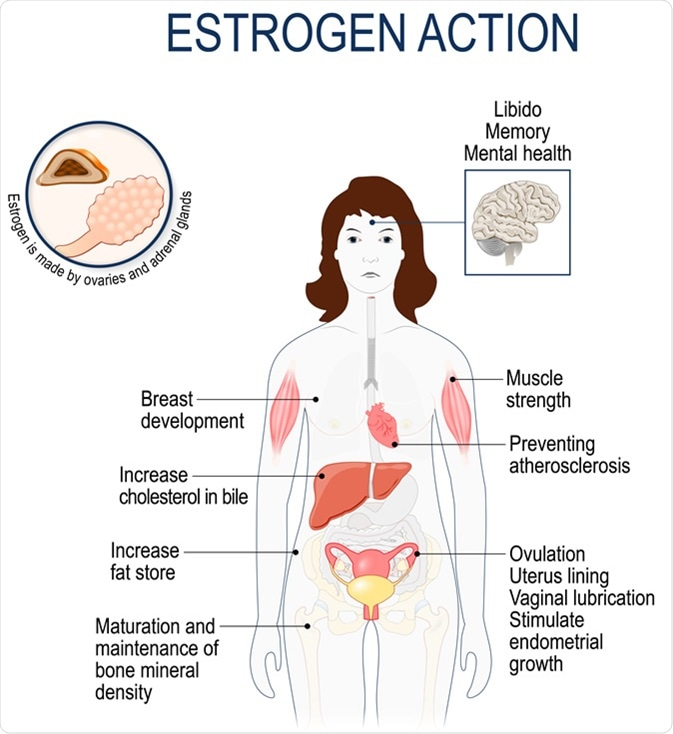
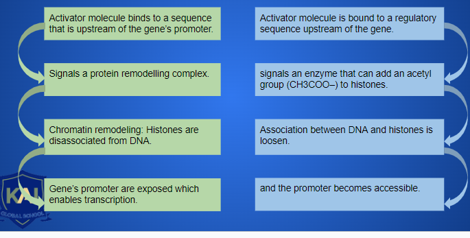
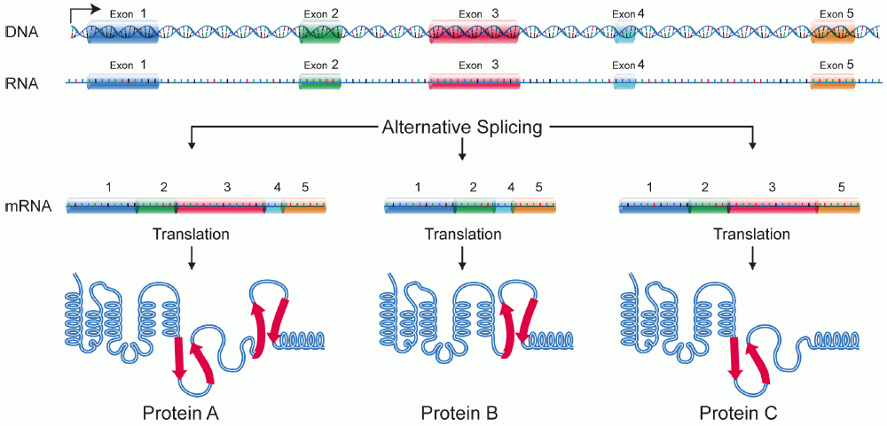

Controlling Gene Expression and Genetic Mutations Part 1
Callout
-
Estrogen is a sexual hormone controlled by the level of a pituitary hormone (LH) that enclencher the ovulation.
-
The estrogens are produced by the ovary in the ovulation period and are responsible for symptoms that occur during the ovulation as presented in the picture.

The bacteria E. coli express the gene for an enzyme that facilitates the breakdown of lactose.
This gene is only transcribed and translated when the E. coli bacteria are exposed to lactose (a sugar molecule found in milk)
-
The cell has the capacity to turn the genes on and off as it is needed for the functioning of the organism.
-
All cells contain the entire genome of the organism but they are not all expressed.
-
Both prokaryotes and eukaryotes cells have the capacity to control gene expression: which genes are expressed, when they are expressed, and how they are expressed to ensure that all cells express only the genes they require and in harmony with their cellular environment.
Callout
Housekeeping genes
Genes that are always expressed in the cell.
Cell metabolism
Cell growth
DNA transcription
DNA replicates structural or functional proteins that are always needed in the cell.
Prokaryotic Gene Control Mechanisms
The Lac Operon
17.png)
- Lactose is a sugar found in milk and represents. Prokaryotes use it as a source of energy acquired directly from the environment.
- To provide enzymes and proteins included in lactose metabolism, prokaryotes must regulate the gene expression required using the operon model of gene expression.
2.jpg)
The lac operon is a cluster of three genes that code for the proteins involved in the metabolism of lactose. It consists of:
-
A promoter: a site where DNA transcription begins.
-
An operator: a sequence of bases that control transcription.
-
The coding regions: code for the various enzymes that metabolize the lactose.
13.png)
11.png)
The Trp Operon
3.jpg)
Callout
-
Tryptophan is an amino acid that is used to build proteins. Prokaryotes are able to synthesize tryptophan independently or use it directly if it is available in the environment.
-
The genes that regulate the production of tryptophan are called “the trip operon”, they consist of:
-
A promoter: a site where DNA transcription begins.
-
An operator: a sequence of bases that control transcription.
-
The coding regions: code for the various enzymes that synthetise the tryptophan.
9.png)
8.png)
Transcriptional Regulation
DNA is wrapped around histones to form the chromatin.
Gene promoter is not exposed to transcription proteins.
Gene promoter is inactive and transcription is blocked.
X
.jpg)
1.png)

5.png)
-
General transcription factors are a group of proteins that bind to the TATA box in the promoter and provide a specific substrate.
-
RNA polymerase binds to this substrate and initiates the transcription.
-
The general transcription factors and RNA polymerase form the transcription initiation complex. This establishes a base rate of gene transcription.
-
The transcription rate can be modified by proteins (activators and repressors), depending on the needs of the cell.
Transcriptional Regulation
Cytosine bases of the promoter gene.
Methylation
4.png)
The cell uses methylation to put genes on hold.
Example:
-
The genes that code for the production of hemoglobin are methylated and thus inactive in all body cells.
-
Except the cells in bone marrow, which produce red blood cells and use specific enzymes for demethylation to allow transcription.
Silencing effect
Post-Transcriptional Regulation: Alternative splicing
-
Depending on which protein is required by the cell, an intron in one pre-mRNA may be considered an exon in another pre-mRNA and spliced out of the second pre-mRNA transcript. The resulting mRNAs are translated to produce different combinations of amino acid sequences that give related proteins.

Post-Transcriptional Regulation: Masking Proteins
-
Masking proteins bind to mRNA and block the translation process.
-
This is a common form of control in many animal eggs by keeping mRNAs inactive until it is fertilized. When it is fertilized, the maskin proteins are removed and embryonic development is initiated.
3.png)
Egg
Protein
Post-Transcriptional Regulation: Regulatory molecules
A regulatory molecule, such as a hormone, will directly or indirectly affect the rate of mRNA breakdown.
In the mammary gland of a rat:
-
It takes about 5 hours for half of the mRNA for casein (a milk protein) to break down.
-
In the presence of the hormone prolactin, the time increases to 92 h.
-
Prolactin extends the lifespan of the casein mRNA and thus a large amount of casein is synthesized for milk production.

Prolactin hormone
5 hours
Casein mRNA’s breakdown
92 hours
Callout
Translational Regulation
-
One of the mechanisms include the modification in the length of the poly(A) tail of the mRNA molecules.
-
Specific enzymes can add or delete repeating sequences of adenine at the ends of the mRNA molecules.
-
The purpose is to increase or decrease the translation time of the mRNA into a protein.
-
This modification changes the rate of mRNA translation depending on cell environment.
2.png)
Post-Translational Regulation: Processing
-
At the end of the translation process, the newly synthesized proteins are nonfunctional precursor proteins.
-
various processing mechanisms remove specific regions in the proteins, add new bonds, and change their conformation to make it an active functional protein.
-
The cell can regulate these types of processing mechanisms to control the availability of activated proteins.
2.png)
Post-Translational Regulation: Chemical Modification
2.png)
-
These mechanisms include the addition or depletion of certain chemical groups to the protein.
-
The presence or absence of these chemical groups puts the protein “on hold” until it is needed.
-
Once environmental and cellular conditions permit it, the groups are added or removed and the protein becomes functional.
Post-Translational Regulation: Degradation
-
The cell needs some proteins for only a few minutes while it uses some others for the lifetime of an organism.
-
Short-lived proteins need to be degraded. The rate of degradation is under regulatory control, modifying the rate at which the products of gene expression are available.
-
This protein is tagged with a small protein “ubiquitin”, which is recognized by the degradation mechanisms of the cell.
-
Adding or removing these tags can either shorten or extend the functional life of a protein.
1.png)
Cancer Development
One of the mechanisms used by cancer cells to grow out of control is the constant lengthening of telomeres presented in this picture.
-
Cancer cells can produce a mass of undifferentiated cells called a tumor.
-
If this mass of cells grows slowly and remains in place, it is called a benign tumor.
-
If the cells grow uncontrollably, invade surrounding tissue, and begin to affect the functions of the organism, they are called malignant tumors or cancers.
-
Malignant tumors are more difficult to remove from the body, and measures such as chemotherapy and radiation are required.
-
Cancer cells are the result of changes in gene regulation. The mechanisms and signals that allow healthy cells to express their genes properly have little to no effect on cancerous cells.
-
In cancerous cells, these genes are mutated to become oncogenes and cause undifferentiated cell division creating tumors.
Genetic Mutations
Genetic mutations are small modifications in the DNA sequence, caused by various agents. They can change the structure and function of the genome.-
Mutations are responsible for the variety of species and individuals of modern life. The current inhabitants of Earth are a result of many mutations over time.
-
Each generation lives in a specific environment and becomes resistant or develops a mechanism of survival, adaptation, or protection that becomes a genetic trait; the beneficial mutation passes to the next generation and so on.
-
90 % of human DNA is non-coding, therefore, mutations in the non-coding regions are silent mutations and neutral.
-
In Prokaryotes, DNA is mostly coding sequences, so a mutation is much more likely to be harmful than neutral or positive.
Causes of Genetic Mutations
Mutations can be grouped into two categories: spontaneous mutations and induced mutations. Spontaneous mutations arise from inaccurate DNA replication. Recall that genomes use a comprehensive quality control system to ensure that DNA is replicated as accurately as possible. However, there is still the possibility of errors during replication. Induced mutations are caused by an environmental agent, known as a mutagen, that directly alters the DNA within a cell. A mutagen can enter the cell nucleus and directly access the genome. Two of the most common forms of mutagens are chemicals and radiation. Both spontaneous and induced mutations can take the form of either small-scale or large-scale mutations. Every subsequent round of cell division can compound the effects of a mutation. WEB LINK Chemical Mutagens.
A chemical mutagen is any chemical agent that can enter the cell nucleus and chemically alter the structure of the DNA. Carbon monoxide, found in exhaust fumes and tobacco smoke, acts as a mutagen and is linked to various forms of cancer. Some chemical mutagens, such as nitrous acid, can modify individual nucleotides so that the nucleotides resemble other base pairs. This type of mutation confuses the replication machinery and results in inaccurate copying.
Other chemical mutagens cause mutations by mimicking a DNA nucleotide. For example, individual nucleotides that have bonded with benzene molecules can be added to a replicating DNA strand. This chemical change can alter the shape of the DNA and negatively affect replication. Another example is ethidium bromide, which is used widely in biotechnology research and is similar in structure to a nitrogenous
base. It can insert itself between the strands of the double helix and alter the structure of the molecule. This may lead to inaccuracies in replication and damage future generations of cells.
Radiation
Electromagnetic radiation can also cause mutations. Lower energy radiation, such as ultraviolet B radiation, can cause bonds to form between adjacent nucleotides along a DNA strand (a phenomenon known as non-homologous end joining). The bonds form a kink in the backbone of the DNA strand and complicate replication and transcription. This form of radiation-induced mutation can lead to certain types of skin cancer. Higher-energy radiation, known as ionizing radiation, can strip molecules of electrons and break bonds within the DNA molecule, causing the rearrangement or deletion of large portions of chromosomes. Prolonged exposure to X-rays has been linked to the development of certain types of tumors. (This is why you wear a lead vest when getting dental X-rays.) Some of the highest-energy radiation comes
from gamma rays and radioactive decay products of nuclear material. Children of residents near the former nuclear reactor at Chornobyl have suffered from various birth defects, and the 2011 tsunami-induced nuclear meltdowns in Japan have raised ongoing public health concerns.